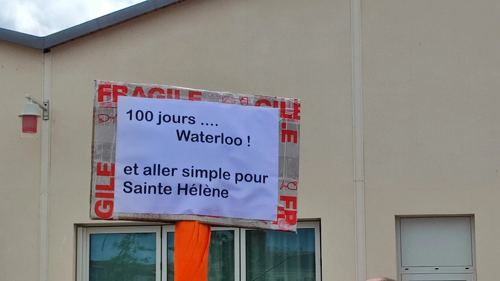
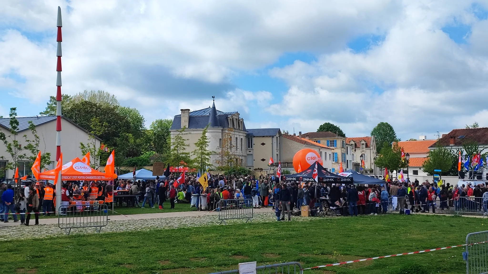
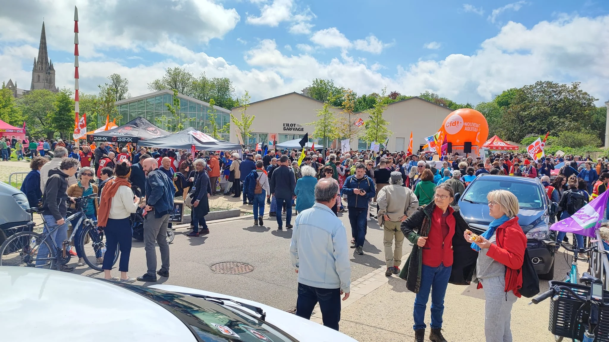

Reportage de la fédération
Niort, le 1er Mai 2023 en photographies
Date indiquée par Facebook · 1 mai 2023
Repères éditoriaux
La galerie rassemble douze photographies de la mobilisation. Le compte rendu fédéral revient sur les revendications de la journée.
Texte conservé avec la publication
#1erMai à #Niort
Quelques photos de cette journée internationale de lutte des travailleuses et travailleurs avec les organisations syndicales rassemblées qui s'est terminée par un pique-nique à Port Boinot.
#reformedesretraites
#64anscesttoujoursnon



Sources
Archive rouge · export Facebook · AR-0002-FB-01667
À lire aussi · À Niort, un 1er Mai massif contre la réforme des retraites